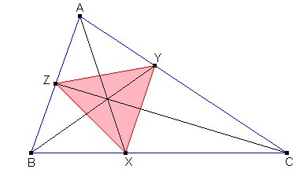
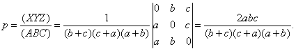
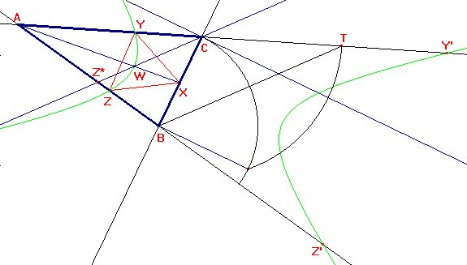

|
Se toma al azar un punto M en el interior de un
triángulo arbitrario ABC. |
|
Lemoine E. (1883) : Quelques questions de
probabilities résolues géometricament.
Bulletin de la S.M.F (Societé Mathématique de France, Tomo 11, p 13-25 . Propuesto por Juan Bosco Romero Márquez. |
Solución de Francisco Javier García Capitán
a) Llamamos x, y, z a las distancias MA1, MB1, MC1. Deberá ser x < y + z, y < z + x, z < x + y.

Determinemos entonces los puntos M para los que se cumplen las igualdades x = y + z, y = z + x, z =x + y.Sean u : v : w son las coordenadas baricéntricas de M, proporcionales a las áreas de los triángulos MBC, MCA, CAB, que a su vez son iguales a (1/2)ax, (1/2)by, (1/2)cz. Entonces la igualdad x = y + z equivale a la igualdad u/a = v/b + w/c, que es una recta en ecuaciones baricéntricas. Esta recta pasa por los puntos Y=(a,0,c) y Z=(a,b,0), pies de las bisectrices interiores de los ángulos B y C.
De forma parecida, las igualdades y = z + x, z =x + y se cumplirán cuando el punto M esté en otra de las rectas que unen los pies de las bisectrices, en la figura las rectas ZX y XY.
La condición del apartado a) se cumplirá cuando M sea un punto interior al triángulo XYZ.
Teniendo entonces que X=(0:b:c), Y=(a:0:c), Z=(a:b:0) probabilidad p pedida en el apartado a) se obtendrá como el cociente de las áreas (XYZ)/(ABC):

b) Usando el teorema del coseno, para que todos los ángulos sean agudos debe ser
x2 < y2 + z2, y2 < z2 + x2, z2 < x2 + y2.
Razonando como antes, estas condiciones equivalen a
u2 /a2 < v2/b2 + w2/c2, v2/b2 < u2/a2 + w2/c2, w2/c2 < u2 /a2 + v2/b2.
Las ecuaciones u2 /a2 = v2/b2 + w2/c2, v2/b2 = u2/a2 + w2/c2, w2/c2 = u2 /a2 + v2/b2 representan cónicas.
Para representar con Cabri la cónica u2 /a2 = v2/b2 + w2/c2 necesitamos cinco puntos. Es fácil darse cuenta que los puntos

Y=(a:0:c), Z = (a:b:0) y sus correspondientes conjugados Y' =(-a:0:c), Z' = (-a:b:0) pertenecen a la cónica. Necesitamos un quinto punto, por ejemplo W=(sqrt(2)a:b:c). Para representarlo tenemos en cuenta que la recta AW cortará a BC en el punto (0:b:c), por lo que será la bisectriz interior del ángulo A. Además, la recta CW cortará a la recta AB en el punto (sqrt(2)a:b:0), punto que dividirá al lado CA en la proporción b:sqrt(2)a, hecho que aprovechamos para realizar la construcción.En efecto, construimos un cuadrado sobre el lado BC y prolongamos el segmento AC hasta un punto T con la longitud de la diagonal de este cuadrado. Ahora unimos el extremo T obtenido con B y trazamos una paralela por C, que corta a AB en el punto buscado. De hecho no nos tenemos que preocupar de ese punto, pues el punto W que necesitamos se obtiene como intersección de la paralela trazada por B con la bisectriz interior del ángulo A.
Repitiendo la construcción para los otros vértices obtenemos tres cónicas que determinan un triángulo curvilineo interior al triángulo XYZ. Habrá que determinar el área de ese triángulo curvilíneo.